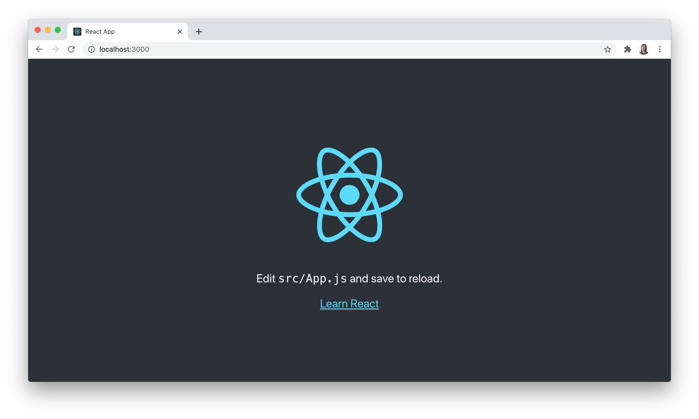
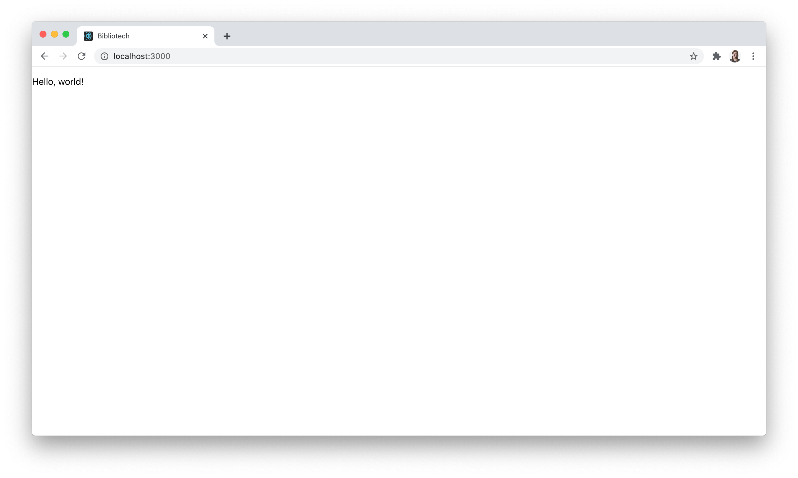
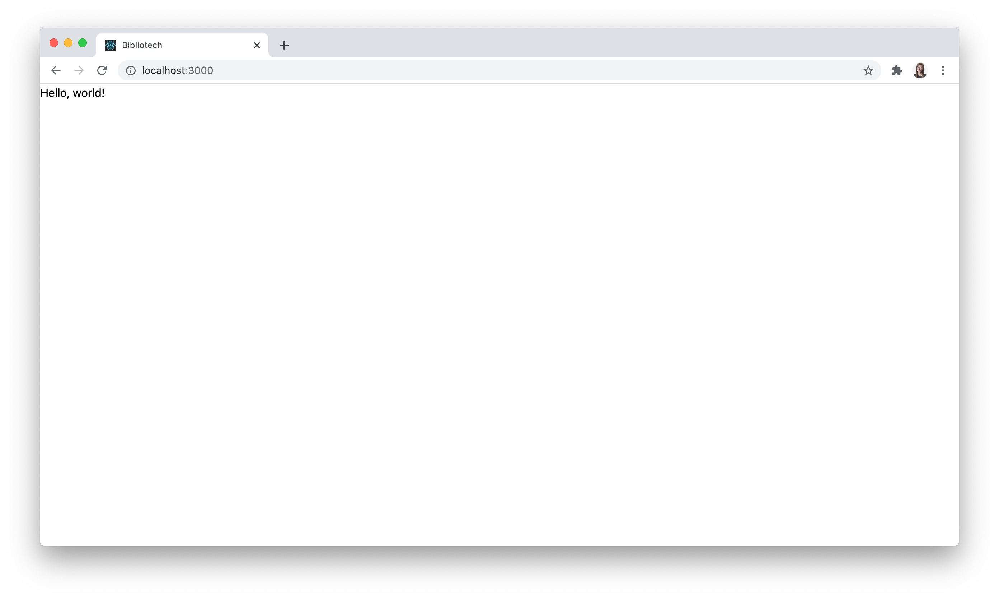
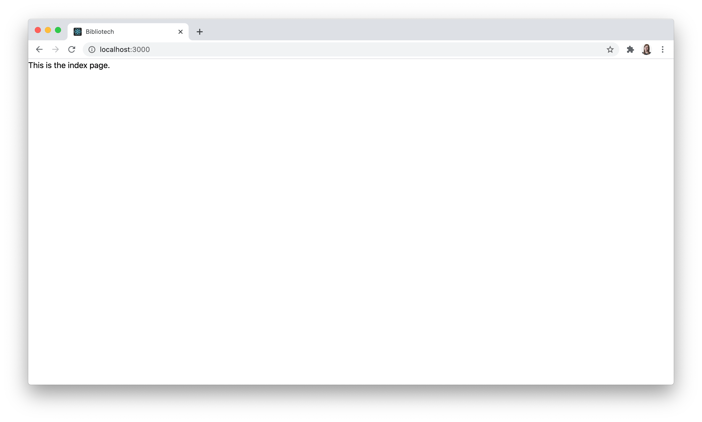
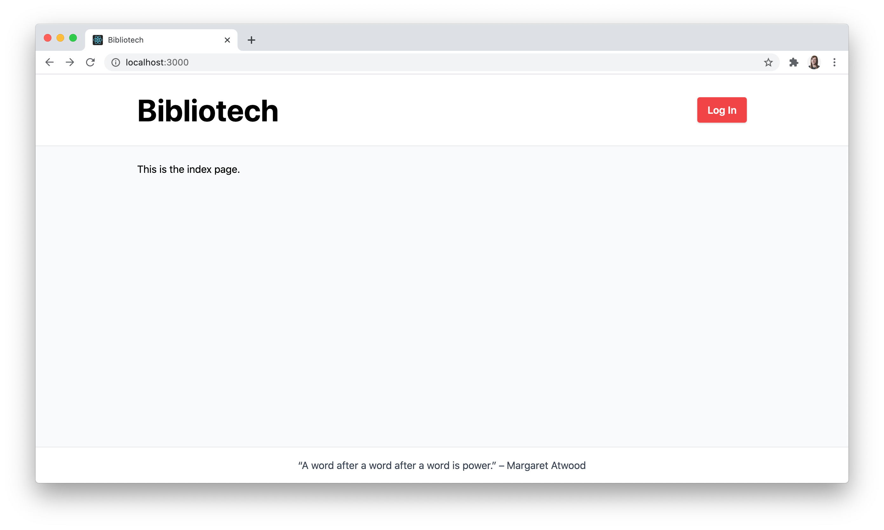
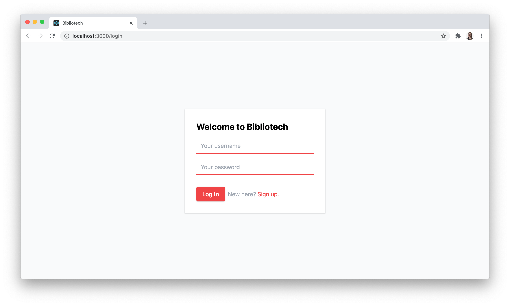
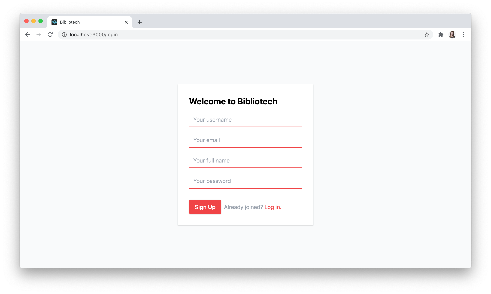

Chapter 7: React App Set-up
In this chapter, we will:
- Bootstrap a React application and use Tailwind CSS to add a basic layout and styles
- Add React Router as a routing solution for the single-page React application
- Add routes for the index, home, and login pages
- Add a generalized layout to the index and home pages
- Add a form for existing users to log in and new users to sign up on the login page
Create a React App
Bibliotech’s GraphQL API is ready to go so it’s finally time to start working on the client application. Our high-level plan to build out the front-end includes the following tools:
- Create React App to generate the boilerplate React application
- Tailwind CSS as a style library to rapidly build out a modern user interface
- Apollo Client to make queries to our GraphQL API
This chapter will focus on laying the groundwork for the Bibliotech client application, so we’ll add the basic layout and create some initial routes for now, then shift our focus to Apollo Client in Chapter 8. To begin, we need a starter React application to work with, so we’ll use the Create React App CLI tool to scaffold one. From the root directory of your project code (in other words, one level up from server), create a new React application using create-react-app:
npx create-react-app@4.0.3 client --use-npm
We’ll continue using npm on the client side, so the --use-npm flag ensures Create React App uses npm to install dependencies even if Yarn has been installed locally. Next, we’ll jump into the new client directory to see what was installed. The directory structure will look like this:
client
├── node_modules/
| └── ...
├── public /
| └── favicon.ico
| └── index.html
| └── logo192.png
| └── logo512.png
| └── manifest.json
| └── robots.txt
├── src
| └── App.css
| └── App.js
| └── App.test.js
| └── index.css
| └── index.js
| └── logo.svg
| └── reportWebVitals.js
| └── setupTests.js
├── .gitignore
├── package-lock.json
├── package.json
├── README.md
You can remove the .gitignore file and default README.md that were added here if you like. Next, if we take a look in package.json, we’ll see that the create-react-app installation process installed three dependencies in our app (react, react-dom, and react-scripts) and we also have four different scripts we can run:
{
// ...
"scripts": {
"start": "react-scripts start",
"build": "react-scripts build",
"test": "react-scripts test",
"eject": "react-scripts eject"
},
// ...
}
Let’s run the start script to start up the client application locally:
npm start
The React app will now be accessible at http://localhost:3000:

Now we’ll strip down the starter files and code to the bare essentials. First, we’ll delete the App.js, App.css, App.test.js, logo.svg, reportWebVitals.js, and setupTests.js files from client/src. Then we’ll replace the starter code in index.js with the following:
client/src/index.js
import ReactDOM from "react-dom";
import "./index.css";
function App() {
return (
<div>
<p>Hello, world!</p>
</div>
);
}
ReactDOM.render(<App />, document.getElementById("root"));
The revamped file and folder structure in client will look like this:
client
├── node_modules/
| └── ...
├── public /
| └── favicon.ico
| └── index.html
| └── logo192.png
| └── logo512.png
| └── manifest.json
| └── robots.txt
├── src
| └── index.css
| └── index.js
├── package-lock.json
├── package.json
We can also update the title element text in the client/public/index.html file to be something more relevant, such as “Bibliotech.” The running application will now look like this:

Add Tailwind CSS
Using Tailwind to style our application’s components will take some initial configuration. First, we need to install Tailwind and some PostCSS-related packages as development dependencies:
npm i -D tailwindcss@npm:@tailwindcss/postcss7-compat@2.0.3 @tailwindcss/postcss7-compat@2.0.3 postcss@7.0.34 autoprefixer@9.8.6
Next, because Create React App doesn’t have built-in support for overriding the PostCSS configuration, we’ll have to install CRACO as a regular dependency:
npm i @craco/craco@6.1.1
The craco CLI must now be used in lieu of react-scripts for the start, build, and test scripts in the client’s package.json file:
client/package.json
{
// ...
"scripts": {
"start": "craco start",
"build": "craco build",
"test": "craco test",
"eject": "react-scripts eject"
},
// ...
}
To add the Tailwind and Autoprefixer PostCSS plugins, add a craco.config.js file to the client directory with the following code:
client/craco.config.js
module.exports = {
style: {
postcss: {
plugins: [require("tailwindcss"), require("autoprefixer")]
}
}
};
From the client directory we’ll also generate a tailwind.config.js file with the minimum amount of configuration using the tailwindcss CLI:
npx tailwindcss init
We should now have tailwind.config.js containing the following code:
client/tailwind.config.js
module.exports = {
purge: [],
darkMode: false, // or 'media' or 'class'
theme: {
extend: {},
},
variants: {
extend: {},
},
plugins: [],
}
Let’s update it to use the same system fonts as before:
client/tailwind.config.js
module.exports = {
purge: [],
darkMode: false, // or 'media' or 'class'
theme: {
extend: {},
fontFamily: {
sans:
"-apple-system, BlinkMacSystemFont, 'Segoe UI', 'Roboto', 'Oxygen', 'Ubuntu', 'Cantarell', 'Fira Sans', 'Droid Sans', 'Helvetica Neue', sans-serif",
mono: "source-code-pro, Menlo, Monaco, Consolas, 'Courier New', monospace"
},
},
variants: {
extend: {},
},
plugins: [],
};
Lastly, we’ll replace the code in the existing index.css file with the following three lines to import the Tailwind styles:
client/src/index.css
@tailwind base;
@tailwind components;
@tailwind utilities;
After the React application restarts, it should look similar to what it did before, but with the top page margin reset now:

Install React Router
Before we put Tailwind to work laying out our application, let’s install React Router and configure a few basic routes. First, we’ll install React Router in the client directory:
npm i react-router-dom@5.2.0
Next, we’ll add a pages directory to client/src. Inside of pages, we’ll create an Index directory to house the index page component and then add an index.js file to it with this code inside:
client/src/pages/Index/index.js
function Index() {
return <p>This is the index page.</p>;
}
export default Index;
The index page will be what unauthenticated users see when they arrive at the application. Authenticated users will need to see a different page after they log in, so we’ll also set up a Home directory in pages with an index.js file with this code in it:
client/src/pages/Home/index.js
function Home() {
return <p>This is a user's homepage.</p>;
}
export default Home;
Lastly, users will need somewhere to go to log into the application, so we’ll create Login page component too:
client/src/pages/Login/index.js
function Login() {
return <p>This is the page where users authenticate.</p>;
}
export default Login;
Now we’ll add a router directory to client/src with another index.js file and use it to define the initial routes for the application:
client/src/router/index.js
import { Route, Switch } from "react-router";
import Index from "../pages/Index";
import Home from "../pages/Home";
import Login from "../pages/Login";
export function Routes() {
return (
<Switch>
<Route exact path="/" component={Index} />
<Route exact path="/home" component={Home} />
<Route exact path="/login" component={Login} />
</Switch>
);
}
We wrap our list of routes in a Switch component because it allows us to render a route exclusively. Without it, the Route component will render inclusively, meaning that more than one page could be rendered at a time in the user interface if its path matches. We also use the exact prop to ensure that the component for this route will only render if the path matches the location.pathname exactly (for example, all paths would match the top-level /, and we don’t want Index to render everywhere).
Now we can update our App component in the top-level index.js file. We’ll import the BrowserRouter from React Router and the Routes component first and then render the Router and Routes instead of the “Hello, world!” message:
client/src/index.js
import { BrowserRouter as Router } from "react-router-dom";
import ReactDOM from "react-dom";
import { Routes } from "./router";
import "./index.css";
function App() {
return (
<Router>
<Routes />
</Router>
);
}
ReactDOM.render(<App />, document.getElementById("root"));
We can see that our index page is rendered in the browser now:

Before moving on, navigate to /home and /login to ensure they render correctly.
Style the Main Layout
Now back to styling. Tailwind provides a very powerful and robust collection of CSS classes that we’ll use to layout and style our React components. While it may seem a bit intimidating at first glance, after a few minutes of working with Tailwind’s classes you’ll likely start to find this CSS framework relatively intuitive.
For example, to style a basic red button with white text and rounded corners, we would add the following classes to a button element:
<button
class="bg-red-500 hover:bg-red-700 font-semibold rounded px-4 py-2 text-white"
>
Log In
</button>
Try pasting this code into the Tailwind playground to see it in action. You can also try adding responsive styles by setting a base class for a particular element and then prefix additional classes with one of Tailwind’s predefined breakpoint widths as follows: text-sm md:text-lg.
Tailwind has excellent documentation and it would be a good idea to take a quick look through it before proceeding with the rest of this chapter. If you’re ready, let’s jump in and use some Tailwind classes to style a reusable Button component that we’ll use for the “Log In” button in the application’s navigation bar. Add a components directory to client/src and add a Button directory inside of that with an index.js file containing the following code:
client/src/components/Button/index.js
function Button({ className, disabled, onClick, text, type }) {
let buttonClasses =
"bg-red-500 hover:bg-red-700 font-semibold rounded px-4 py-2 shadow hover:shadow-md focus:outline-none focus:shadow-outline text-white text-sm sm:text-base";
if (className) {
buttonClasses = `${buttonClasses} ${className}`;
}
if (disabled) {
buttonClasses = `${buttonClasses} cursor-not-allowed`;
}
return (
<button
className={buttonClasses}
disabled={disabled}
onClick={onClick}
type={type}
>
{text}
</button>
);
}
Button.defaultProps = {
disabled: false,
onClick: () => {},
type: "button"
};
export default Button;
Button is the first component in this chapter to use props, and at a minimum, it would be a good idea to do some typechecking on any props we set up using React’s PropTypes library. Alternatively, you may wish to use Flow or TypeScript too.
For brevity’s sake, typechecking has been omitted from the client code in this book. You can read more about typechecking in the React documentation:
Next, we’ll create a NavBar component to display the name of the application on the lefthand side of the header and a “Log In” button on the right:
client/src/components/NavBar/index.js
import { Link, useHistory } from "react-router-dom";
import Button from "../Button";
function NavBar() {
const history = useHistory();
return (
<header className="bg-white border-b border-gray-200 border-solid">
<div className="flex flex-wrap items-center justify-between mx-auto max-w-screen-lg px-8 py-8 w-full">
<Link
to="/"
className="text-black hover:text-gray-800 hover:no-underline mr-4"
>
<h1>Bibliotech</h1>
</Link>
<div className="flex items-center sm:justify-end mt-2 sm:mt-0">
<Button
onClick={event => {
event.preventDefault();
history.push("/login");
}}
text="Log In"
/>
</div>
</div>
</header>
);
}
export default NavBar;
Note that Tailwind completely resets the styles on all heading elements. In the code above, we could apply some styles directly to the h1, but we can also use Tailwind classes to style certain elements generically. To add some base styles to all h1 elements in the application, add the following code in the index.css file directly after the @tailwind base import:
client/src/index.css
@tailwind base;
h1 {
@apply font-bold leading-none text-5xl;
}
@tailwind components;
@tailwind utilities;
Now let’s build up a MainLayout component using the NavBar for the application header, rendering the component’s children in the main content area, and a footer element at the bottom of the page:
client/src/components/MainLayout/index.js
import NavBar from "../NavBar";
function MainLayout({ children }) {
return (
<div className="bg-gray-50">
<div className="flex flex-col justify-between min-h-screen">
<NavBar />
<div className="flex-auto flex flex-col max-w-screen-lg mx-auto px-8 py-6 w-full">
{children}
</div>
<footer className="bg-white border-t border-gray-200 border-solid py-4">
<div className="">
<p className="text-center text-gray-700 text-sm sm:text-base">
“A word after a word after a word is power.”{" "}
<span className="whitespace-no-wrap">– Margaret Atwood</span>
</p>
</div>
</footer>
</div>
</div>
);
}
export default MainLayout;
With this code in place, we can import this component into the Index component file and wrap the content in the MainLayout:
client/src/pages/Index/index.js
import MainLayout from "../../components/MainLayout";
function Index() {
return (
<MainLayout>
<p>This is the index page.</p>
</MainLayout>
);
}
export default Index;
And we can do the same for the Home component too:
client/src/pages/Home/index.js
import MainLayout from "../../components/MainLayout";
function Home() {
return (
<MainLayout>
<p>This is a user's homepage.</p>
</MainLayout>
);
}
export default Home;
The application should now render in the browser like this now:

Style the Login Page Layout
We’ll use the MainLayout component for most of our pages, but the /login route will have a unique layout applied to it. The layout will consist of a single form horizontally and vertically centered on a light grey background. As with the Button component in the previous section, it would be wise to create a reusable TextInput component to use throughout the application. We’ll begin by creating a TextInput directory in components and adding the following code to its index.js file:
client/src/components/TextInput/index.js
function TextInput({
className,
error,
hiddenLabel,
id,
inputWidthClass,
label,
name,
onChange,
placeholder,
type,
value,
...rest
}) {
return (
<div className={className}>
<label
htmlFor={id}
className={`block font-semibold ${hiddenLabel && "sr-only"}`}
>
{label}
</label>
<input
className={`appearance-none bg-transparent focus:bg-gray-100 border-b-2 border-red-500 focus:border-red-700 focus:outline-none mr-2 px-3 py-2 text-gray-800 text-sm sm:text-base ${inputWidthClass}`}
id={id}
onChange={onChange}
type={type}
placeholder={placeholder}
value={value}
{...rest}
/>
{error && <p className="text-red-500 text-sm">{error}</p>}
</div>
);
}
TextInput.defaultProps = {
inputWidthClass: "w-auto",
type: "text"
};
export default TextInput;
Next, we’ll import that new component and the Button in Login page component’s file, remove the placeholder paragraph, and update it with the following content:
client/src/pages/Login/index.js
import Button from "../../components/Button";
import TextInput from "../../components/TextInput";
function Login() {
return (
<div className="bg-gray-50 flex items-center justify-center min-h-screen">
<div className="bg-white shadow p-8 max-w-sm w-10/12">
<h1 className="mb-4 text-2xl">Welcome to Bibliotech</h1>
<form>
<TextInput
className="mb-4"
hiddenLabel
id="username"
inputWidthClass="w-full"
label="Username"
placeholder="Your username"
type="text"
/>
<TextInput
className="mb-8"
hiddenLabel
id="password"
inputWidthClass="w-full"
label="Password"
placeholder="Your password"
type="password"
/>
<Button text="Log In" type="submit" />
</form>
</div>
</div>
);
}
export default Login;
The updated /login route should now render as follows:
Now we need to consider how users will initially sign up, and ideally, there will be some way to toggle the view of this form to work for new sign-ups as well. To do that, we’ll need to manage some state. And to manage state, we’ll need to use React Hooks. If you’re new to hooks, they offer a cleaner API to manage state in React components than what traditional lifecycle methods have afforded in a React Component subclass. To use hooks, we must keep in mind their two basic rules:
- Only call hooks at the top level of a React component function (they can’t be called from inside loops, conditionals, or other nested functions)
- Only call hooks from React components or within other custom hooks that you create (so we can’t call them from within regular JavaScript functions)
Using the useState hook will allow us to manage state conveniently within a component but without using a class-based component. When we call the useState hook, we can pass in an initial value for the state (or nothing at all) and it returns the current state value plus a function for updating that state in a tuple-like array. For this form, we’ll need to add a boolean value to the component’s state that tracks whether the user has identified as already being a member of Bibliotech. If they are, then we’ll render fields to log in, otherwise, we’ll render additional fields to facilitate the user sign-up process.
Let’s import the useState hook from React and call it in the Login page component:
client/src/pages/Login/index.js
import { useState } from "react";
// ...
function Login() {
const [isMember, setIsMember] = useState(true);
// ...
}
export default Login;
Again, isMember is the current state value and setIsMember is a function that we can call to update that state to a new value. Let’s use both now to conditionally render some of the existing text in the form so that it’s relevant to new users. We’ll toggle the state value back and forth when the user clicks on the new button:
client/src/pages/Login/index.js
// ...
function Login() {
const [isMember, setIsMember] = useState(true);
return (
<div className="bg-gray-50 flex items-center justify-center min-h-screen">
<div className="bg-white shadow p-8 max-w-sm w-10/12">
<h1 className="mb-4 text-2xl">Welcome to Bibliotech</h1>
<form>
{/* ... */}
<div className="flex items-center">
<Button
className="mr-2"
text={isMember ? "Log In" : "Sign Up"}
type="submit"
/>
<p className="text-gray-400">
{isMember ? "New here?" : "Already joined?"}
</p>
<button
className="text-red-500 hover:text-red-700 ml-1 focus:outline-none hover:underline"
onClick={event => {
event.preventDefault();
setIsMember(state => !state);
}}
>
{isMember ? "Sign up." : "Log in."}
</button>
</div>
</form>
</div>
</div>
);
}
export default Login;
Lastly, we’ll conditionally render two additional fields in the form to capture a user’s full name and email address when they sign up as well:
client/src/pages/Login/index.js
// ...
function Login() {
const [isMember, setIsMember] = useState(true);
return (
<div className="bg-gray-50 flex items-center justify-center min-h-screen">
<div className="bg-white shadow p-8 max-w-sm w-10/12">
<h1 className="mb-4 text-2xl">Welcome to Bibliotech</h1>
<form>
<TextInput
className="mb-4"
hiddenLabel
id="username"
inputWidthClass="w-full"
label="Username"
placeholder="Your username"
type="text"
/>
{!isMember && (
<>
<TextInput
className="mb-4"
hiddenLabel
id="email"
inputWidthClass="w-full"
label="Email"
placeholder="Your email"
type="email"
/>
<TextInput
className="mb-4"
hiddenLabel
id="name"
inputWidthClass="w-full"
label="Full Name"
placeholder="Your full name"
type="text"
/>
</>
)}
{/* ... */}
</form>
</div>
</div>
);
}
export default Login;
The form will now look like this when initially loaded:

And when the “Sign up” button is clicked, the form will re-render as follows:

Summary
At the end of this chapter, we have a solid foundation in place for Bibliotech’s new React application. We added the Tailwind CSS framework to style it and React Router to handle routing. We also applied a common layout to the index and home pages and roughed out a form that will allow existing users to log in or new users to sign up. In the next chapter, we’ll finally add our GraphQL API into the mix by installing Apollo Client and sending queries to the API to populate the front-end application with real data.